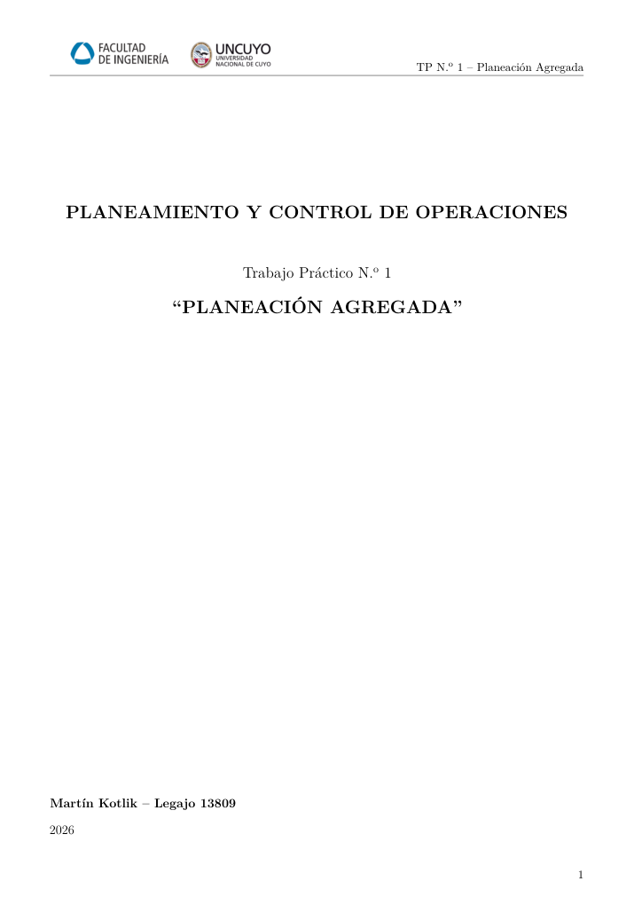

OPTIMISATION DES OPÉRATIONS · UNCUYO · 2026
Planification agrégée de production - optimisation avec Solver
Comparaison de quatre stratégies de planification pour un programme annuel simulé de 6 120 unités, intégrant effectifs, heures supplémentaires et stocks.
Excel SolverPlanningCost Optimization

PRÉSENTATION DU PROJET
Optimisation des ressources et des coûts
Le projet compare la production constante, la production avec heures supplémentaires, la planification manuelle et l’optimisation par Solver.
Les contraintes portent sur la satisfaction de la demande, la disponibilité des opérateurs, les heures supplémentaires et les niveaux de stock. La solution optimisée minimise le coût total du cas étudié.